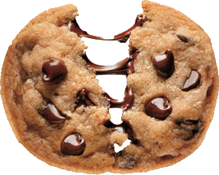

Chocolate Chip Cookies Recipe
History of Chocolate Chip Cookies
My grams invented them.
Ingredients
- 2 1/4 cups all-purpose flour
- 1 teaspoon baking soda
- 1 teaspoon salt
- 1 cup (2 sticks) butter, softened
- 3/4 cup granulated sugar
- 3/4 cup packed brown sugar
- 1 teaspoon vanilla extract
- 2 large eggs
- 2 cups (12-oz. pkg.) NESTLÉ® TOLL HOUSE® Semi-Sweet Chocolate Morsels
- 1 cup chopped nuts
Instructions
Original Cookies:
- Preheat oven to 375° F.
- Combine flour, baking soda and salt in small bowl. Beat butter, granulated sugar, brown sugar and vanilla extract in large mixer bowl until creamy. Add eggs, one at a time, beating well after each addition. Gradually beat in flour mixture. Stir in morsels and nuts. Drop by rounded tablespoon onto ungreased baking sheets.
- Bake for 9 to 11 minutes or until golden brown. Cool on baking sheets for 2 minutes; remove to wire racks to cool completely.
Pan Cookie Variation:
- Preheat oven to 350° F.
- Grease 15 x 10-inch jelly-roll pan.
- Prepare dough as above.
- Spread into prepared pan.
- Bake for 20 to 25 minutes or until golden brown.
- Cool in pan on wire rack.
Makes 4 dozen bars.
Slice and Bake Cookie Variation:
- Prepare dough as above.
- Divide in half; wrap in waxed paper.
- Refrigerate for 1 hour or until firm.
- Shape each half into 15-inch log; wrap in wax paper.
- Refrigerate for 30 minutes.*
- Preheat oven to 375° F.
- Cut into 1/2-inch-thick slices; place on ungreased baking sheets.
- Bake for 8 to 10 minutes or until golden brown.
- Cool on baking sheets for 2 minutes; remove to wire racks to cool completely.
Makes about 5 dozen cookies.
* May be stored in refrigerator for up to 1 week or in freezer for up to 8 weeks.
* FOR HIGH ALTITUDE BAKING (5,200 feet):
- Increase flour to 2 1/2 cups.
- Add 2 teaspoons water with flour and reduce both granulated sugar and brown sugar to 2/3 cup each.
- Bake drop cookies for 8 to 10 minutes and pan cookie for 17 to 19 minutes.
Chocolate Chip Cookie Gallery
